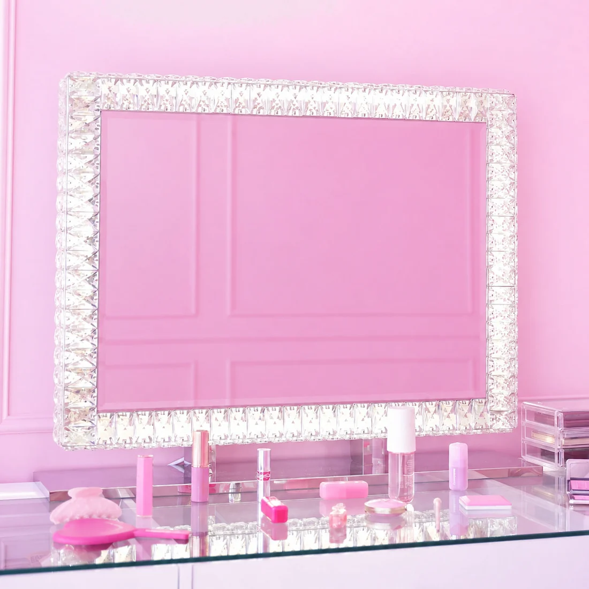
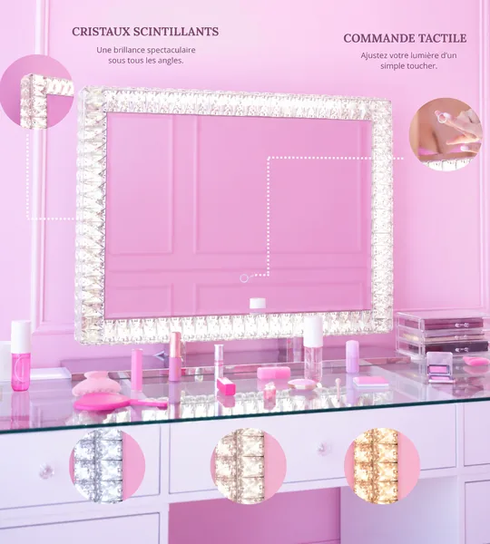
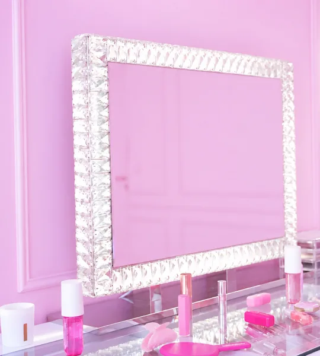
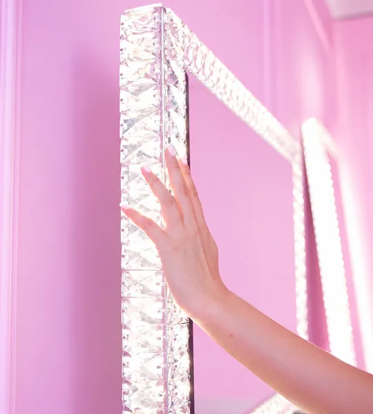
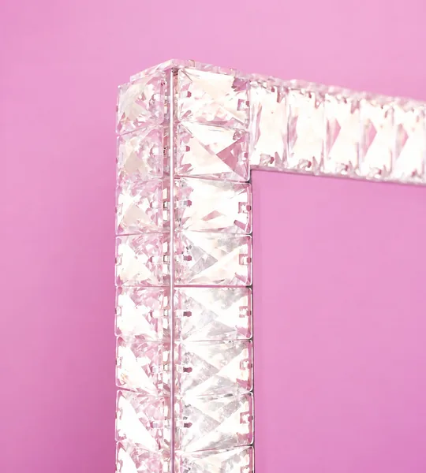
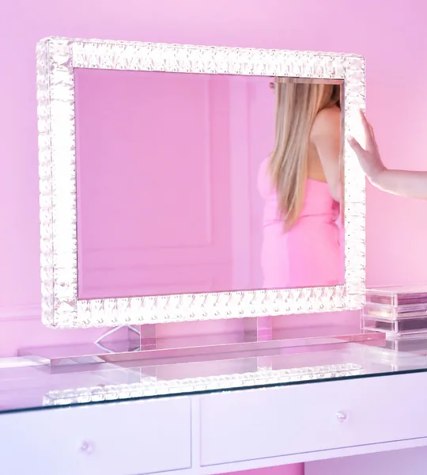
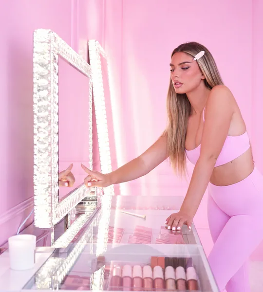
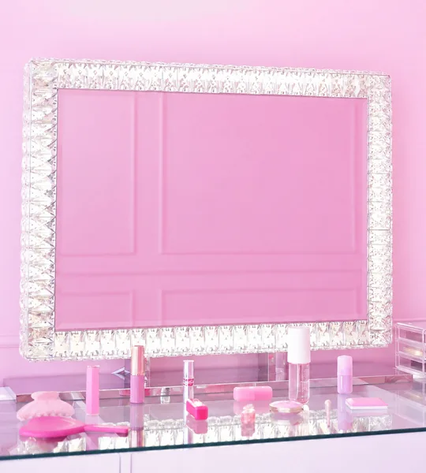

Coup de cœur beauté
Miroir de coiffeuse LED à cristaux
Une lumière de studio
pour sublimer votre routine !
Un grand miroir de 78 × 60 cm au cadre orné de cristaux scintillants, avec un éclairage LED réglable du bout des doigts. Idéal pour un maquillage précis et une coiffeuse digne des plus beaux studios beauté.

-
3 lumières réglables
Chaude, naturelle
ou froide -
Cadre à cristaux
Un éclat scintillant
sous tous les angles -
Commande tactile
Luminosité ajustable
d’un simple toucher -
Grand format 78 × 60 cm
À poser sur la coiffeuse
ou à fixer au mur
Le produit
Miroir de coiffeuse
LED à cristaux
Ce miroir associe un cadre orné de cristaux à un éclairage LED réglable pour accompagner le maquillage et la coiffure. Sa lumière homogène révèle chaque détail, tandis que ses lignes modernes et ses finitions raffinées apportent une touche glamour à votre espace beauté.
- 3 températures de couleur3 000 K, 4 000 K et 6 400 K
- IRC supérieur à 90Des couleurs fidèles pour un maquillage précis
- Pose ou fixation muraleBase et supports amovibles fournis
Pourquoi vous allez l’adorer
Votre coin beauté, version studio
-
Une lumière de pro
Un éclairage homogène et
des couleurs fidèles (IRC > 90). -
Un éclat glamour
Des cristaux scintillants
qui subliment la pièce. -
Réglable en un geste
Changez de lumière selon
le moment et votre look. -
Économe en énergie
La technologie LED éclaire bien
en consommant peu.
Galerie
Le miroir en situation

Cristaux & commande tactile Maquillage précis 
Sur la coiffeuse 
Réglage tactile 
Cadre à cristaux Lumière homogène 
Grand format 78 × 60 cm 
Ambiance studio Votre routine beauté 
Lignes modernes
Photos : Sundye. Caractéristiques détaillées sur la fiche produit du marchand.
Questions fréquentes
Vos questions, nos réponses
Le miroir mesure 78 cm de large pour 60 cm de haut. Son cadre est en acier inoxydable 201 et sa base est en acier.
Oui. Il peut être posé sur une coiffeuse grâce à sa base, ou fixé au mur avec les supports fournis. La base et les supports sont amovibles.
Utilisez un chiffon doux et un produit de nettoyage adapté pour conserver la propreté du miroir et l’éclat des cristaux. Les gants blancs fournis évitent les traces de doigts lors de l’installation.
Trois températures de couleur, 3 000 K (blanc chaud), 4 000 K (blanc naturel) et 6 400 K (blanc froid), ainsi qu’une luminosité réglable par commande tactile. Le ruban LED 2835 atteint une puissance maximale de 48 W, avec un IRC supérieur à 90.
Le miroir est livré avec sa base, des vis, des clous, un manuel en anglais, des gants blancs pour limiter les traces de doigts et des cristaux de rechange.
Le miroir est vendu sur Sundye, accessible depuis les boutons de cette page. Prix, délais de livraison et conditions de retour sont ceux indiqués par le marchand au moment de la commande.